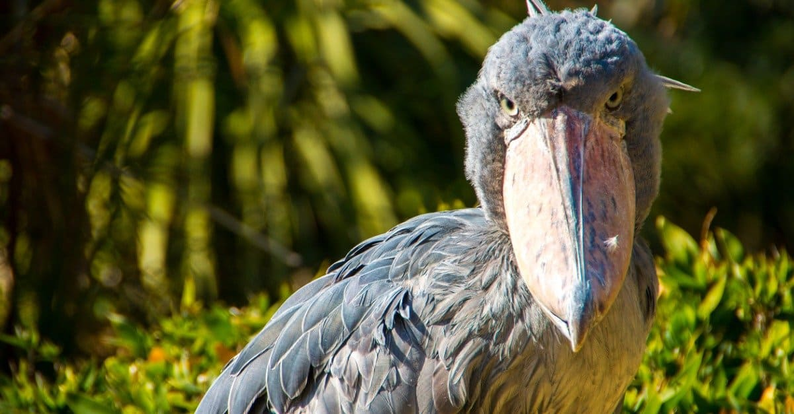

The creepy shoebill stork seemingly poses no threat to humans.
©iStock.com/yoko_ken_chan
These scary animals of the tropics poses no threat at all to humans and have been known to let researchers get mere feet away from them comfortably, but the bizarre shoe-shaped beak attached to their face is still a terrifying weapon in the wild — and that's earned this avian a position as the creepiest bird on Earth. Size has a big part to play in this. Shoebills may be gangly, but they can reach a height of five feet and a wingspan of roughly seven feet. That size allows them to hunt down large prey like catfish, eels, and even baby crocodiles as a matter of course. But it's their method of hunting that's the scariest thing about them.
These storks will fall headfirst with their beaks open to trap live prey whole. The stork will then open its mouth slightly and decapitate them with its razor-sharp beak when they try to escape. These birds are even known to fight fully grown crocodiles, and their mating call sounds alarmingly like a machine gun.